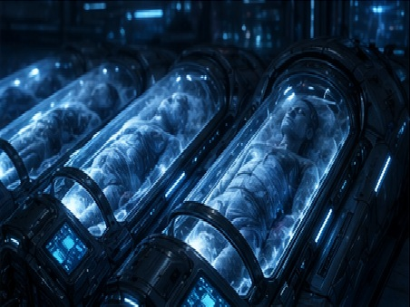
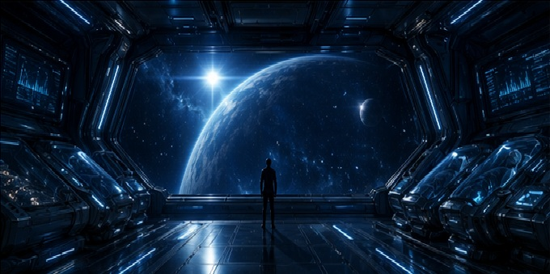

Innovació
Recerca avançada orientada a imaginar noves formes de preservació biològica per a l’exploració espacial.
Criogènesi • Espai • Futur
Cryotech Labs desenvolupa solucions de criogènesi avançada orientades a fer possibles els viatges espacials de llarga durada, preservant la vida humana durant trajectes interplanetaris.
Qui som
Cryotech Labs és una empresa fictícia de biotecnologia avançada amb enfocament especulatiu. El projecte imagina com una corporació del futur podria comunicar serveis de criogènesi, preservació humana i suport biomèdic per a missions espacials de llarga durada.
Aquesta proposta combina estètica publicitària, discurs científic i imaginari espacial per construir una experiència visual coherent, immersiva i versemblant.
Més informacióRecerca avançada orientada a imaginar noves formes de preservació biològica per a l’exploració espacial.
Sistemes pensats per mantenir la vida humana en estat de suspensió durant trajectes de molt llarga durada.
Una proposta que també planteja preguntes sobre desigualtat, accés i límits ètics de la tecnologia.
Solucions
Aquestes àrees connecten la criogènesi amb l’exploració espacial i la supervivència humana a llarg termini.

Tecnologies avançades per preservar teixits, cèl·lules i organismes en estat de suspensió durant trajectes espacials prolongats.
Investigació biomèdica i optimització genètica orientades a reforçar l’adaptació humana en entorns extrems.

Sistemes dissenyats per integrar la criopreservació en missions espacials de llarga durada i reforçar la viabilitat del viatge.
Espot publicitari
Aquesta secció presenta l’espot conceptual de Cryotech Labs, centrat en la criogènesi com a tecnologia clau per als viatges espacials de llarga durada.
Ètica
El projecte no busca només reproduir l’estètica d’una marca tecnològica premium, sinó també plantejar preguntes sobre qui podrà accedir a aquestes tecnologies, quins límits haurien d’existir en la preservació de la vida per a missions espacials i com es transforma la condició humana quan es converteix en objecte de transport interplanetari.
Seu corporativa
Neo Biomedical Space District, Sector 7
Barcelona · Plataforma Mediterrània de Recerca
Canals
hello@cryotechlabs.example
+34 600 000 000